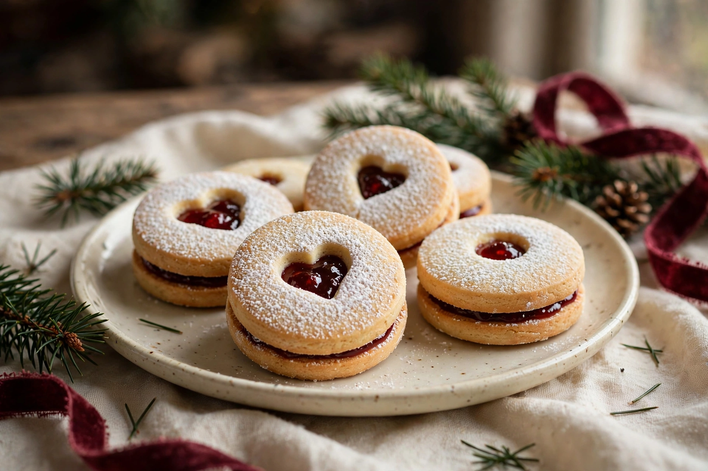

Spitzbuben (Jam Sandwich Cookies)
Two tender shortcrust cookies with fruity redcurrant jelly in between: these jam sandwich cookies are the prettiest sight on any cookie plate.

Contents
Ingredients
Instructions
- Quickly knead the flour, butter, sugar, egg, vanilla sugar and salt into a smooth shortcrust dough. Wrap and chill for 1 hour.
- Roll out the dough on a floured surface to about ⅛ inch (3 mm) thick. Cut out circles of about 2 inches (5 cm). Cut a small hole in the center of half of them.
- Place on a parchment-lined baking sheet and bake at 350°F (180°C) for about 10 minutes until pale. Let cool.
- Stir the jelly until smooth and warm it slightly. Spread a thin layer on the cookies without holes.
- Dust the hole cookies with confectioners' sugar, place them on top and press down gently.
Tip
Spread the jelly thinly and sandwich the cookies shortly before serving – that way the pastry stays perfectly crumbly.
📌 Find more cookie ideas on our Pinterest profile:
Cookie Recipes on Pinterest
Cookie Recipes on Pinterest